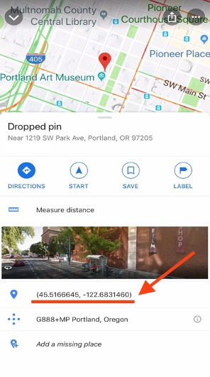

1 Geographic Information System (GIS)
Geographic information system (GIS) consists of integrated computer hardware and software that store, manage, analyze, edit, output, and visualize geographic data.
1.1 Why we need to learn GIS?
GIS become very important technology to decision-makers across a wide range of disciplines:
- Agriculture
- Climate change
- Oceanography
- Business location planning
- Architecture
- Telecommunications
- Criminology
- Aviation
- Biodiversity conservation
- Urban planning
- Land use management
- Navigation systems
- Public health
- Environmental analysis
- Military
- Transport network planning
- Maritime transport1.2 Geographic coordinate system (GCS)
Geographic coordinate system (GCS) is a three-dimensional reference system that locates points on the Earth’s surface. The unit of measure is usually decimal degrees. A point has two coordinate values:
- Latitude and
- Longitude1.2.1 Find coordinates on google maps on the mobile app:
- Open the google maps app on your iPhone or Android phone
- Enter the location, or select and hold to drop a pin on the map of the location you want the coordinates for
- Scroll down to find the coordinates.
- Tap the coordinates to copy to your phone’s clipboard
- Paste the coordinates
Find coordinates to identify and share the location of the Eikokuji Campus of Kochi University of Technology.

1.2.2 Software
We will primarily use QGIS and R software. Reasons:
- These are powerful and free
- Available in this lab
- You can install in your own machine
1.2.3 For next lectures
Install QGIS in your computer (If you have any difficulties to install, I will guide you to install the software during our face-to-face lectures)
The web-link for downloading the software is below: https://qgis.org/en/site/forusers/download.html
Everything you need is in Moodle:
- Syllabus
- Lecture materials
- Assigned reading
- Assignments
- Email address to submit homework, assignments and reports: geoinformatics.moinul@gmail.com
Grades:
- Assignments
- Quizzes
- Final Exam
- Class participation